Development of the Internet |
|||
| 1950 | Sputnik | The first artificial Earth Satellite launched by the Soviet Union in Oct 1957. |  |
| Modem | AT&T developed the first commercial mass-produced modem called a digital subset to link SAGE computers across the US. It communicated at 110 bits per second. 1958. |  |
|
| ARPA | Advanced Research Projects Agency was created in response to Spudnik in Feb 1958. The first wide area packet switched network. |  |
|
| 1960 | Packet Switching concept invented | The routing and transfering of data by means of addressed packets so that a channel is occupied during transmission of a packet only. | |
| ASCII Developed | American Standard Code for Information Intechange- a character encoding standard for electronic communication. | ||
| First WAN (dialup) | Wide Area Network- connecting large groups of computers over a large distance. Used mainly by large businesses. | 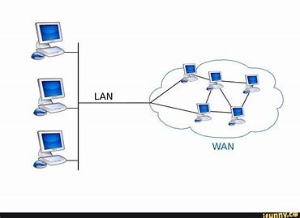 | |
| Start of ARPAnet | To link computers at Pentagon funded research institutions over telephone lines. | ||
| 1970 | Email invented | Email invented by an American computer programmer Ray Tomlinson in 1971 | 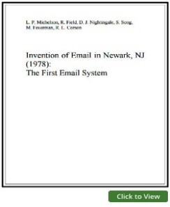 |
| IP Address register | Internet Protocol, a numerical label that is assigned to a device connected to a computer network (192.0.2.1) Two main functions: Identification and Addressing. | 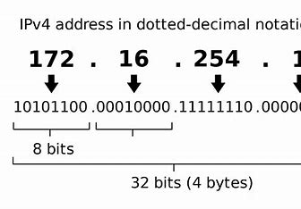 | |
| TCP/IP developed | Developed by Vint Cerf and Bob kahn. It is the component that collects and reassembles the packets of data and IP is responsible for making sure the packets are sent to the right destination. | 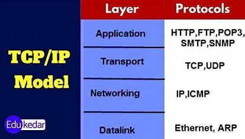 | |
| First Non-US ARPAnet Link (Londom)The term "Internet" is coined | Fistst non US ARPAnet NORSAR's TIP installed June '73, two IBM mainframes were connected. At the same time a TIP in London was installed, a communicantion link from Kjeller to London was made. | 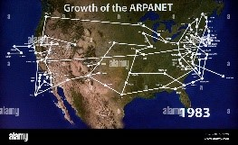 | |
| 1980 | ARPAnet adoptsTCP/IP | 1981 to 1983 the ARPAnet was majorly upgraded. The old NCP was replaced with TCP/IP protocol which allowed different networks to connect. Scientist referred to a network of networks as the internet. The new set of networks using TCP/IP became known as The Internet. | 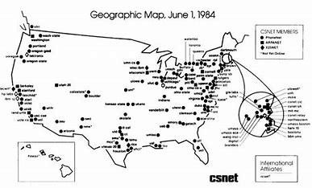 |
| DNS Invented | Domain Name System was invented by Paul Mockapetris in 1983. His colleague Jon Postel created many of the standards governing the internet today. Both are inducted into the Internet Hall of Fame. March 1985 first domain name was registered. | 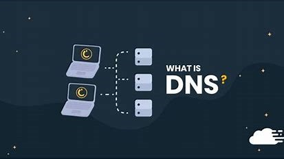 | |
| The Internet expands across the globe | Invented by Tim Berners-Less to share information across a network of computers. The introduction of the World Wide Web changed communication in 1989. | ||
| WWW created (1989) | World Wide Web was created March 12 1989 by Tim Berners-Lee, an English computer scientist. It is an information system to enable content sharing over the internet for everyone. It was open to the public in 1991. Documents and other media is made available to the network through web servers and can be used through web browsers. | ||
| 1990 | Linux created | Linux created September 17 1991 by Linus Torvalds a Finnish student. It was a personal project to create a new free operating system kernel. Millions of developers worldwide collaborated to develop ther Linus operating system. It's the most popular OS used by programmers. | |
| HTTP | HyperText Transfer Protocol, developed by Tim Berners-Lee | ||
| 1991 WWW open to public HTML 1 | February 26 1991 English domputer scientist Tim Berners-Lee introduced his invention of the World Wide Web to the public, it was the first internet browser available to the public. HTTP-HyperText Markup Language is the standard markup language for documents designed to be displayed in a web browser. | ||
| Mosaic - First browser | In 1993 Marc Andreessen and team developed NCSA Mosaic. This was the first browser to allow images to be viewed without being downloaded as a separate file. | 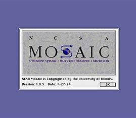 | |
| Nov 1995 First Online Newspaper The Telegraph | 1994 The Telegraph becomes the first newspaper in Britain to produce an online website, with the launch of the Electronic Telegraph. | ||
| MP3 developed | MP3 stands for MPEG Audio Layer III—a standard for audio compression that makes any music file smaller with little or no loss of sound quality. This was developed by the Fraunhofer Society under trhe lead of Karlheinz Brandenburg in Germany. Released in December 1991. | 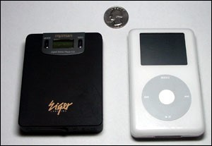 | |
| VOIP | Voice over Internet Protocol (IP Telephony) a method and group for voice calls for the delivery of voice communication sessions over Internet Protocol networks, such as the Internet. | ||
| First Blog | The first blog was links.net created in 1994 by Justin Hall as a place to publish his writing. Others followed creating their own sites to share personal thoughts, these were referred to as Online Diaries. In 1998 Jonathan Dube became the first journalist to blog an event. It was chronicled Hurricane Bonnie for the Charlotte Observer | 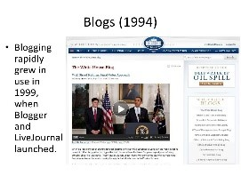 | td|
| Craigs List | Craig Newman began an email distribution list to friends featuring local events in the San Francisco Bay Area in 1995. In 1996 it became a web-based service and expaned into other classified cxategories. | 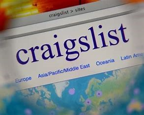 | |
| First Mobile Phone with internet connection | In 1996 Nokia produced the first mobile phone with Internet access. This phone connected via dial-up. The mobiles web was based on Wireless Markup Language called WAP (Wireless Application Protocol. The Nokia 7110 followed in 1999. | ||
| 2000 | Creative Commons | Creative Commons (CC) founded January 15 2001, by Lawrence Lessig, Hal Abelson, and Eric Eldred, is an international nonprofit organization that empowers people to grow and sustain the thriving commons of shared knowledge and culture. | 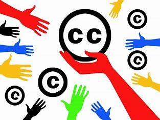 |
| Wikipedia | Wikipedia is a free online encyclopedia created and edited by volunteers around the world. It was created by Jimmy Wales and Larry Sanger on January 15 2001. | 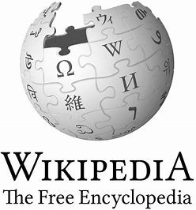 | |
| WI-FI | WI-FI was introduced on September 21 1997. It is a group of wireless network protocols based on the IEEE 802.11 family of standards commonly used for local area networking of devices and internet access to allow nearby digital devices to exchange data by radio waves. | ||
| Chrome | Web browser developed by Google. It was released for Microsoft Windows in 2008, it was built with free software components from Apple WebKit and Firefox. | 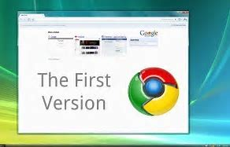 | |
| HTML 5 | HyperText Markup Language version 5. Released on January 22 2008 by WHATWG. The final versions of HTML | ||
| Net changes from research to commerce | In 2000 Google launched AdWords which helped businesses advertise online. In 2005 Amazon introduced Prime membership to offer benefits to the loyal customers. In 2009 Square was introduced which allowed seemless payments through an app. | ||
| YouTube, AOL, Twitter, The Facebook, WordPress | YouTube introduced February 14 2005, an online video sharing platform founded by Chad Hurley, Steve Chen and Jawed Karim. Bought by Google in November 2006. AOL and Time Warner merged in 2000. In 2006 a new programme was released called Active Security Monitor a tool to monitor and rate PC security status. Two months later AOL released AOL Active Virus Sheild. Twitter a social media website founded on March 21 2006. users can post and share messages, upload pictures and videos. The Facebook created by Mark Zuckerberg and 4 other Harvard students is a social media and social networking service founded on February 4 2004. Wordpress founded on May 27 2003 is a powerful content management system used for building websites and creating blogs. | ||
| Web 2.0 | Web 2.0 also known as Web, Social Web, Particpative/Participatory refers to websites that focus on user generated content, ease of use and compatibility with other devices, systems and products for the user. This allowed users to interract with each other. | ||
| 2010 | China Dominates Internet usage | Mobile internet use in 2010 in China topped 300 million people. There was 457 million Internet users by the end of 2010 | 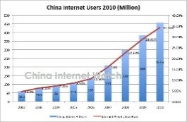 |
| Pintrest, Instagram launched | Pintrest was founded in December 2009, the site is an American image sharing and social media service launched in March 2010. It is used as a virtual catalogue. It is used for recipes homes & gardens etc. Instagram is a social networking and video sharing service. Kevin Systrom and Mike Krieger launched Instagram on October 5 2010. It is used for sharing videos and pictures which can be edited, organised and be geographically tagged. | 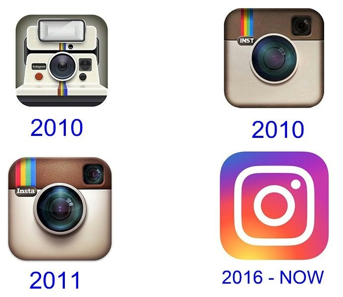 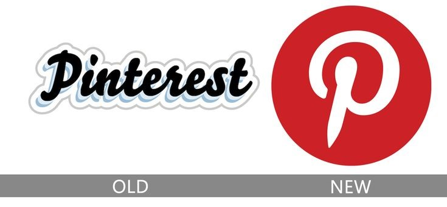 |
|
| Edward Snowden & NSA | A US and Russian Citizen who was a computer intelligence consultant. He leaked highlt classified information from NSA (National Security Agency in 2013 to journalists. | ||
| AI Voice assistants | Siri was first introduced by Apple Inc in 2011 on the iPhone 4S, this was the first virtual digital assistant on a smartphone. It was used to help sent messages, make calls, checking weather etc. Alexa & Echo were introduced in November 2014. | 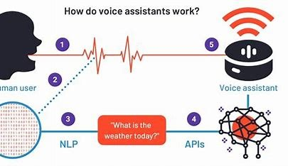 | |
| 2019 The Internet is 50 | The Internet turns 50 On 29 October 1969 two computers communicated with each other for the first time over the US science network Arpanet. This marked the birth of the Internet | 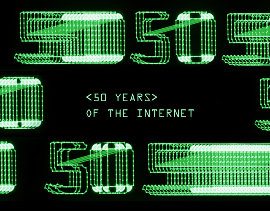 | |
| 2020 | TikTok | A short form video hosting service owned by ByteDance. Users can submit videos between 3 seconds and 10 minutes. It is one of the most popular websites. In 2020 it passed 2 billion mobule downloads. | |
| Cash transfer Venmo, Revolut | Venmo is a mobile payment service. It was taken over by PayPal in 2013 and lets users transfer funds via mobile app. It also operated as a small social network. In 2021 Venmo and PayPal services would allow the purchase and use of cryptocurrencies. Revolut founded in 2015 a banking service for retail customers and businesses. In 2021 it was granted a full banking licence and is now available in 30 countries. | ||
| Cryptocurrencies | Digital currency to work as a medium of exchange through a computer network, it is not reliant on a central authority such as a bank or government to maintain it. El Salvador was the first country to accept bitcoin as legal tender. | ||
| Blockchain | A blockchain was created by Satoshi Nakamoto in 2008 to serve as the public distributed ledger for bitcoin cryptocurrency transactions. | ||
| Online Collaboration Tools Teams, Zoom | Microsoft Teams started In November 2016. It is a messaging app for all organisations, a workspace for realtime communication, file storage and sharing, meetings and online-learning etc. In 2019/2020 Teams helped people work from home during Covid. Zoom founded by Eric Yuan in 2011 is a videotelephony and online chat service through a cxloud based peer to peer software platform. It is used for meetings chat conferences and events, also popular during Covid. | 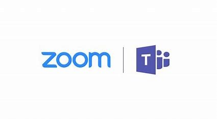 | |
| 5G Mobile | The 5th generation wireless standard for mobile networks. It is faster, more secure and stable. It helps to connect eveyone and everything. | 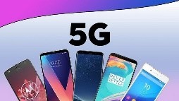 | |
| The Internet of Things | IoT is the interconnection of physical devices such as devices and vehicles. The devices are embedded with sensors, software and connectivity which allows the exchange of data. Examples: Tesla autopilot, Smart Fridge, Smart Phones, Smart Watches and hoovers. | ||
| AI , chatGPT | Chat GPT is an artificial intelligence chatbot from OpenAI that allows user to converse and ask questions. It is an alternative to search engines. GPT stands fpor generative pre-trained transformer. It is handy to save time, conduct research, strengthen an existing piece of writing and summarise long documents or explain complex concepts. | ||
| Web 3.0 The Decentralised Web | This represents the next phase in the evolution of the internet. It enables users to control data privacy and ownership and protects from hackers and 3rd parties getting access to important data. | 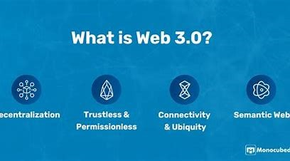 | |